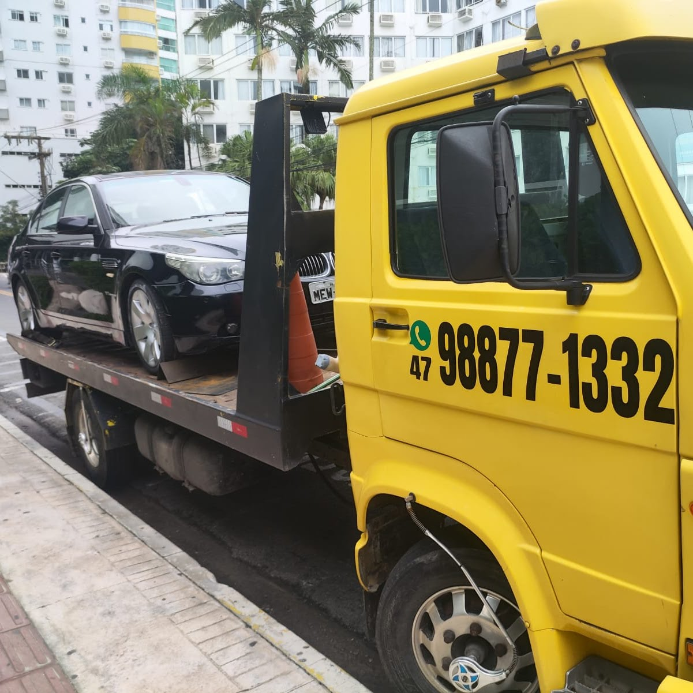
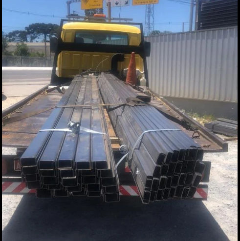
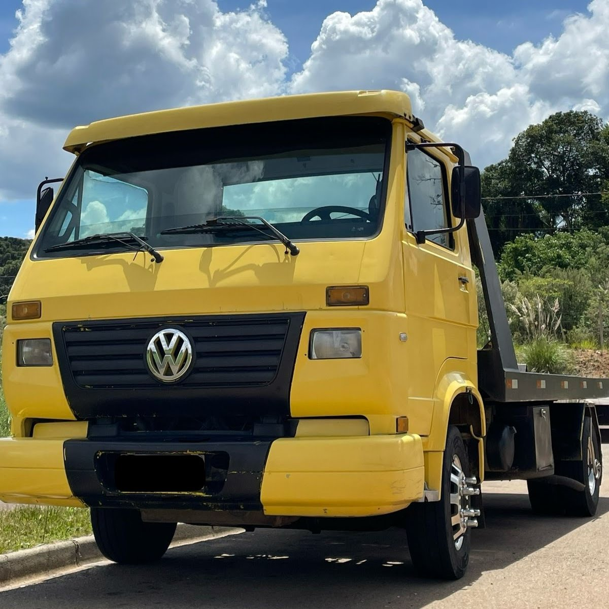
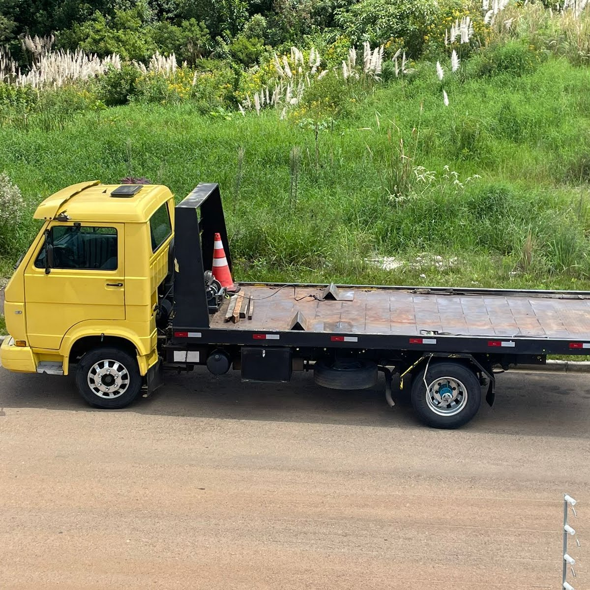

Plantão diárioInclusive madrugadas e feriados
PLANTÃO 24 HORAS EM ITAPEMA
Seu veículo parou?
Seu veículo parou?
A gente resolve.
Guincho e socorro veicular em Itapema, Porto Belo, Tijucas, Balneário Camboriú e trechos da BR-101. Envie sua localização e fale direto com a equipe.
✓ Atendimento local✓ PIX e cartão✓ Carros, motos e utilitários
Atendimento regionalItapema, cidades próximas e BR-101
Diferentes veículosCarros, motos, utilitários e vans
Pagamento facilitadoConsulte PIX e cartão no atendimento
SOCORRO SEM COMPLICAÇÃO
O que aconteceu com seu veículo?
Escolha uma situação para abrir o WhatsApp com a mensagem pronta. Você só precisa completar com a localização.
🚛Preciso de guinchoPane, colisão ou veículo sem condições de rodarSolicitar agora →
🔋Bateria descarregadaAuxílio para tentar colocar o veículo em funcionamentoPedir auxílio →
🛞Pneu furadoTroca com estepe em local com condição seguraPedir auxílio →
🛣️Estou na BR-101Informe sentido, quilômetro e uma referência próximaChamar atendimento →
SERVIÇOS
Uma solução para cada imprevisto.
Atendimento pensado para remover, transportar ou ajudar seu veículo com segurança.

EMERGÊNCIA 24H
🚗Guincho quando você mais precisa
Atendimento para panes, colisões e situações em que o veículo não pode continuar rodando.
Conhecer o serviço →Carros
Remoção e transporte em plataforma.
Ver detalhes →Motos
Fixação cuidadosa para transporte.
Ver detalhes →Utilitários e vans
Atendimento conforme peso e dimensões.
Ver detalhes →Transporte programado
Entre residências, lojas e oficinas.
Ver detalhes →
📍
BASE LOCALItapema • Santa Catarina
ATENDIMENTO REGIONAL
Perto de você, com contato direto.
A disponibilidade e o prazo dependem do ponto de partida, trânsito, tipo de veículo e condições do local. Envie a localização para receber uma orientação rápida.
Confirmar atendimento na minha localização →COMO FUNCIONA
Do chamado ao destino.
Um processo simples para reduzir a incerteza em um momento de emergência.
Você chama
Entre em contato por telefone ou WhatsApp.
A equipe avalia
Informe localização, veículo, situação e destino.
O atendimento é confirmado
Você recebe as orientações e condições do serviço.
O veículo é transportado
Embarque cuidadoso e entrega no destino combinado.
NOSSO TRABALHO
Estrutura real. Atendimento de verdade.



EQUIPE DE PLANTÃONão fique parado.
Não fique parado.
Fale com a gente agora.
Compartilhe sua localização e os dados do veículo para agilizar o atendimento.